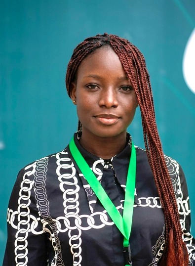
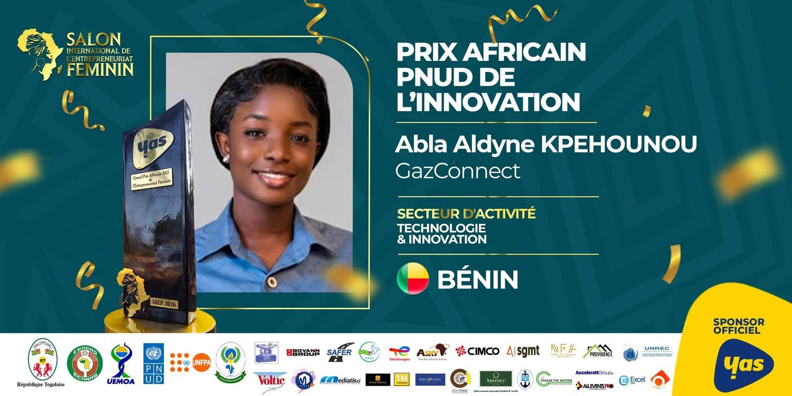
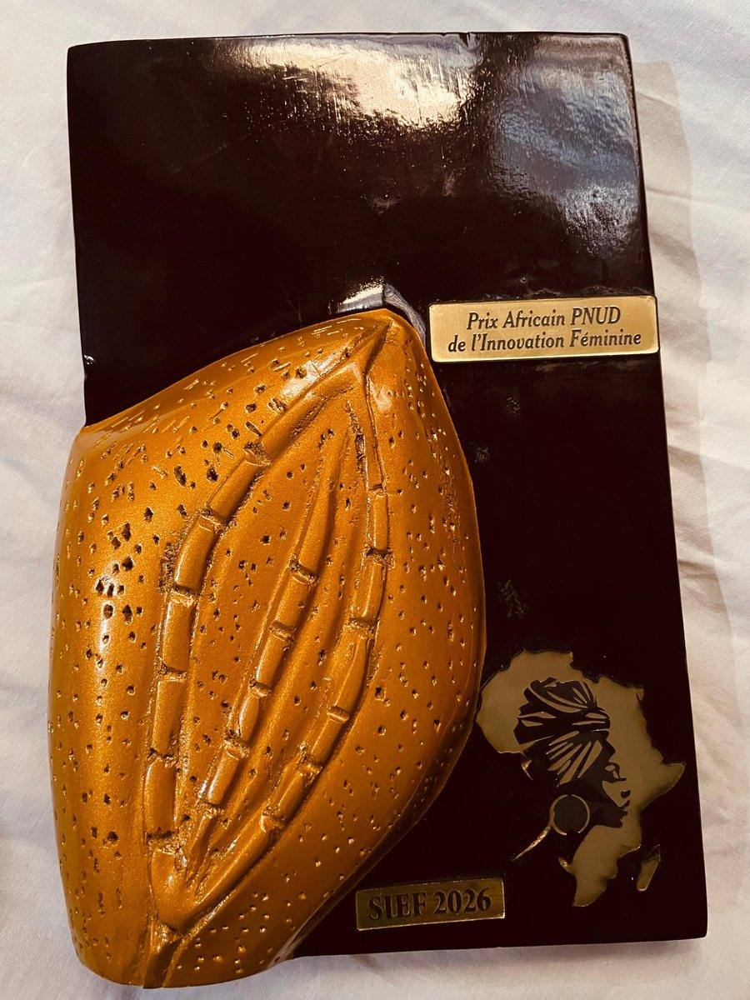
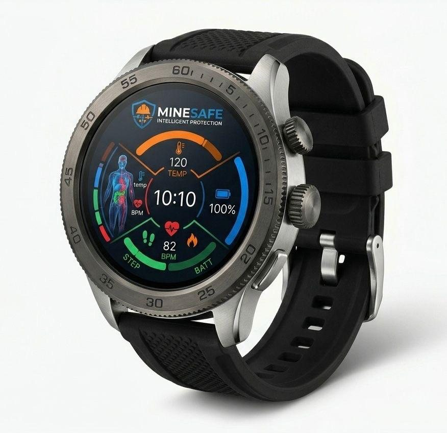
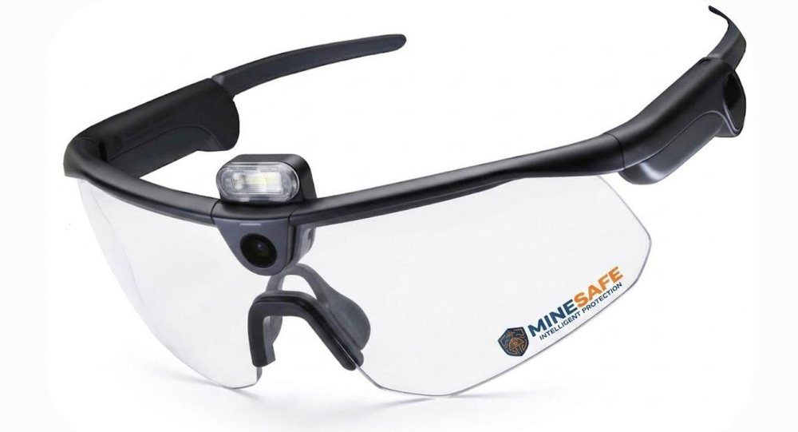
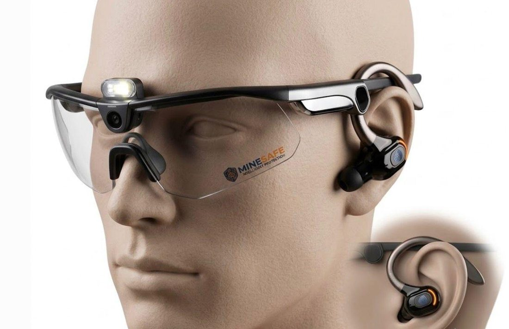
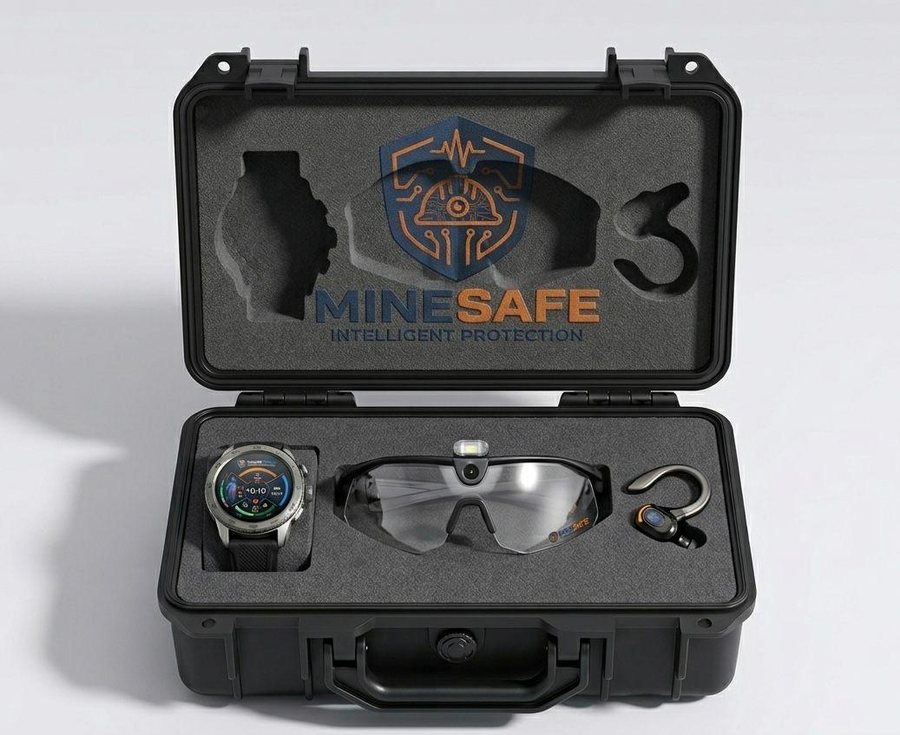
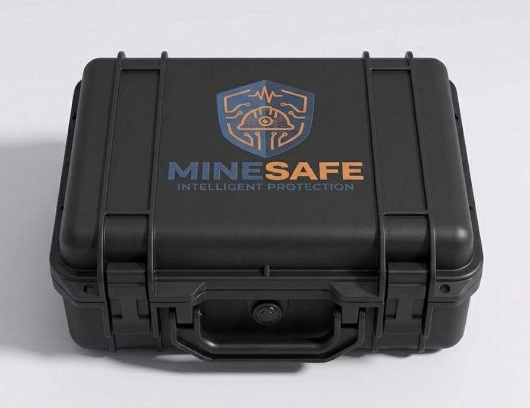
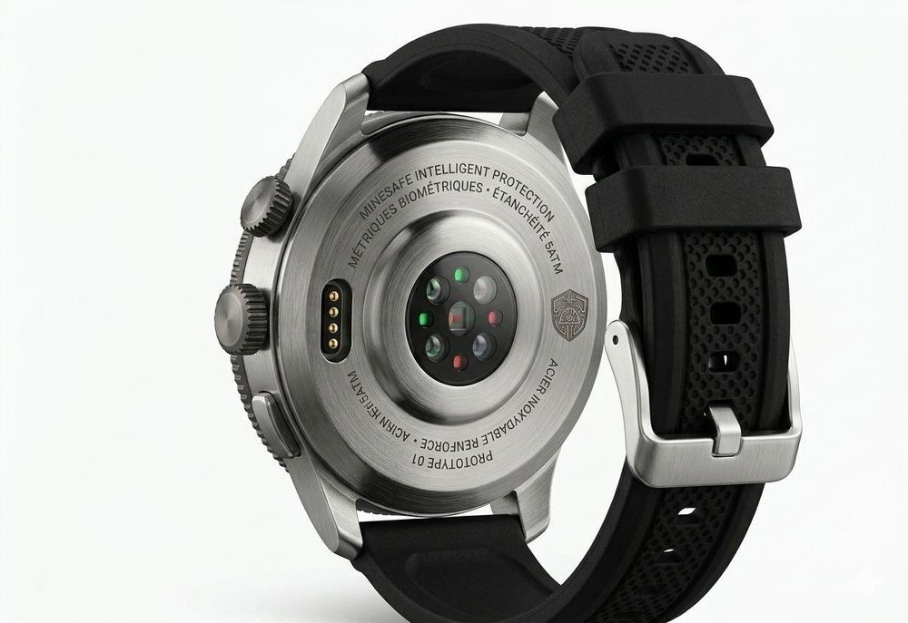

- Évaluation des risques avant chaque intervention sur les chantiers, et causeries sécurité chaque semaine avec le responsable HSE.
- Inspection régulière des installations, dans le respect des normes ISO du site.
- Diagnostic vibratoire (Machine Sentry) et acoustique pour anticiper les pannes sur les lignes de production.
- Rapports techniques et suivi des ordres de travail dans la GMAO.

Aldyne Kpehounou · Chargée SSE · Comé, Bénin
★Lauréate du Prix africain PNUD de l'innovation 2026Le risque se traite avant l'accident.
Chargée de sécurité, santé et environnement. J'ai évalué les risques avant chaque intervention dans une usine certifiée ISO 9001, 14001 et 45001, diagnostiqué des machines aux vibrations, et conçu MineSafe, une solution de sécurité prédictive pour les mineurs.
- 3
- prix remportés
- 3
- stages en industrie
- < 2 mois
- retour sur investissement estimé, réseau d'air comprimé
Distinction · 2026
Prix africain PNUD de l'innovation
Le plus haut prix de mon parcours, remporté avec GazConnect : un système qui mesure le gaz qui reste dans la bouteille, prévient avant la panne et détecte les fuites.
- Lauréate
- Abla Aldyne Kpehounou
- Projet
- GazConnect
- Catégorie
- Technologie et innovation
- Événement
- Salon international de l'entrepreneuriat féminin, SIEF 2026
- Pays
- Bénin


Le trophéeRemis lors du SIEF 2026. Sur la plaque : « Prix africain PNUD de l'innovation féminine ».
01 · Sur le terrain
D'abord les risques, ensuite les outils.
- Maintenance des métiers à tisser et des machines à carder.
- Premières bases en soudure et en fabrication mécanique.
- Maintenance des machines BPS C1 et démantèlement des BPS 200.
- Installation et maintenance de systèmes de vidéosurveillance.
02 · Projet de l'e-MBA
MineSafe, la sécurité du mineur en temps réel.
Un kit connecté qui combine objets connectés, Edge AI et plateforme de supervision HSE. Il repère les situations dangereuses, détecte les chutes et reconnaît les signes de fatigue. Chaque alerte part en temps réel.
Visuels de conception du prototype · faites défiler






03 · Deux autres projets
Une bouteille de gaz et un réseau d'air.
Projet entrepreneurial
GazConnect
Un système embarqué mesure en temps réel le niveau de gaz qui reste dans la bouteille et prévient l'utilisateur avant la panne. Il détecte aussi les fuites, pour renforcer la sécurité à la maison.
Prix africain PNUD de l'innovation, 2026
Mémoire de licence
Air comprimé chez CIMBENIN
Diagnostic technique du réseau et des compresseurs, repérage des fuites d'énergie, puis plan d'actions préventives et correctives. Retour sur investissement estimé à moins de deux mois.
04 · Distinctions
Trois prix, et une présidence étudiante.
- 2026
Prix africain PNUD de l'innovation
Pour GazConnect. Salon international de l'entrepreneuriat féminin.
- 2025
Prix de l'excellence entrepreneuriale
Awards University, deuxième édition, Bénin.
- 2024
Prix de la meilleure femme entreprenante
Awards University, deuxième édition, Bénin.
- 2024-25
Présidente de la Voix des Étudiantes (VDE) de la FEUA
UNSTIM, INSTI, Lokossa.
05 · Formation et compétences
De l'électrotechnique au management QHSE.
- En cours
Master 1 en management des organisations et entreprises, option QHSE
Institut International d'Ingénierie de l'Eau et de l'Environnement, en ligne
- Avril à juin 2026
e-MBA en gestion de l'hygiène, de la sécurité et de l'environnement
BT Institute of Business and Technology, Westlands, Ghana
- Sept. 2025 à juin 2026
Formation en anglais
BT Institute of Business and Technology, Westlands, Ghana
- Octobre 2025
Conférence « Entrepreneurship and Innovation in Africa »
Certificat de participation, Wisconsin International University College, Ghana
- 2022 à 2025
Licence en maintenance industrielle
Institut National Supérieur de Technologie Industrielle de Lokossa
- 2020 à 2022
Baccalauréat F3 électrotechnique, diplôme de technicien industriel, CAP électricité
Office du baccalauréat, Direction des Examens et Concours
SSE et conformité
Identification et évaluation des risques professionnels. Inspections et visites de sécurité sur le terrain. Suivi des actions correctives et préventives. Référentiels ISO 45001 et ISO 9001.
Stratégie et projet
Analyse SWOT et diagnostic stratégique. Business plan technico-financier. Évaluation de la rentabilité et du retour sur investissement.
Technique
Diagnostic vibratoire et acoustique (Machine Sentry, stéthoscope). Électricité industrielle et vidéosurveillance. Diagnostic d'efficacité énergétique des réseaux industriels.
Outils et langues
GMAO Managemaint. Word, Excel, PowerPoint. Anglais B1, français C1, xwéda langue maternelle.
En dehors du travail : musique, lecture, danse.